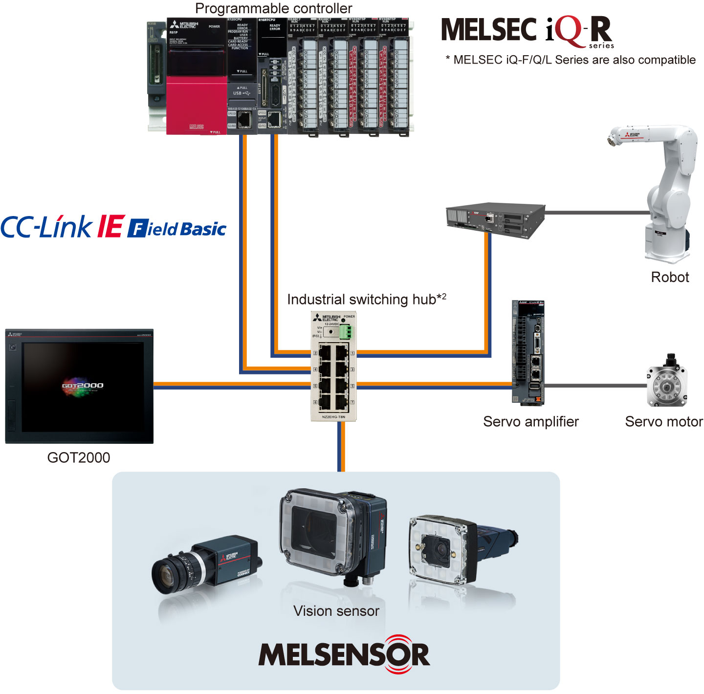

Vision Sensor Features Compatibility

Compatibility with Mitsubishi Electric factory automation products
- The vision sensor is compatible with CC-Link IE Field Network Basic*1, iQSS, and SLMP, enabling easier connection to Mitsubishi Electric products such as programmable controllers, robots, and motion controllers
- Control/monitoring/parameter setting of the vision sensor and result acquisition can be done from the programmable controller
(Ex.) Turning on/off of devices can trigger the vision sensor - Recognition images of the vision sensor are transferred to the GOT (HMI) or IT system via an FTP server, realizing traceability by comparing recognition results and recognition images

CC-Link IE Field Network Basic compatibl
CC-Link IE Field Network Basic interface functions are embedded, realizing high-compatibility with the programmable controller such as easier setup. Measured values and judgment results are acquired via network. In addition, settings of the vision sensor can be checked and changed from the programmable controller.
iQSS compatible*3
Automatic detection of the vision sensor and linkage with dedicated tools enable reduction in total cost in design/setup/operation/maintenance.
iQSS enables setup and monitoring with engineering tool of the programmable controller
iQ Sensor Solution (iQSS) provides a solution at the sensor level in e-F@ctory.
• Easy setup • Sensor monitor • Dedicated tool linkage
- *1.VS70/VS80 are compatible with In-Sight Explorer for MELSENSOR Vision of version 5.4.3 later and VS20 is compatible with version 5.6.2 or later.
- *2.VS80 can be connected using PoE hub only.
- *3.For details, please refer to "iQ Sensor Solution (L(NA)16029ENG)".